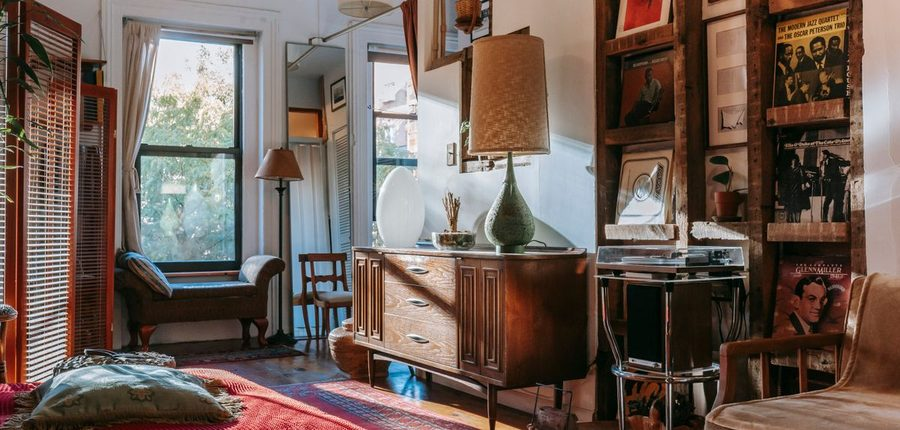
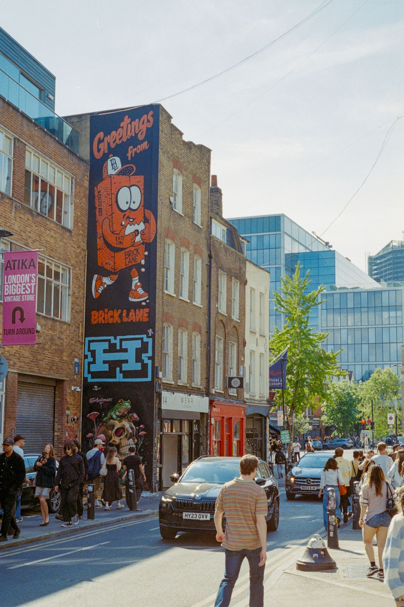
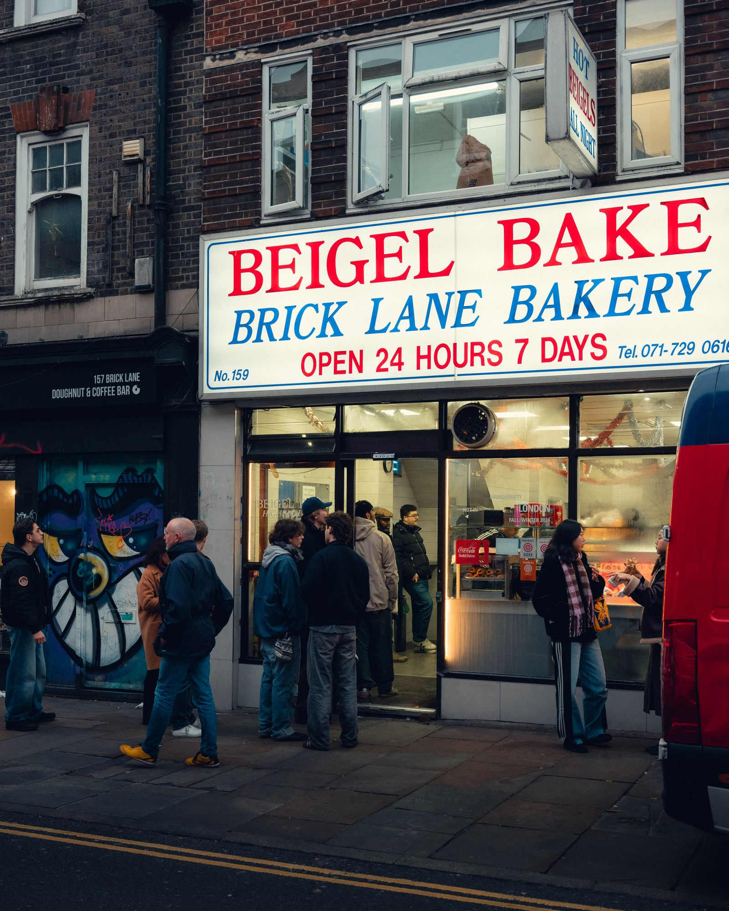

The latest · For creators · Rates & getting paid
The field guide to local creator marketing
62 guides · Updated November 13, 2026
Magpie Learn
Practical guides for local creators and the businesses that book them. No fluff and no jargon: the numbers, the steps and the rules, in plain language.
54 guides, newest first
The latest
- Nov 12, 2026Why influencer platforms hide their prices7 min
- Nov 11, 2026Washington DC creator marketing: neighborhoods, not reach7 min
- Nov 10, 2026Nashville bars and venues: booking local musicians who post8 min
- Nov 9, 2026How many revisions should a brand get?7 min
- Nov 8, 2026Seattle creators to watch7 min
- Nov 8, 2026Raleigh creators to watch8 min
- Nov 8, 2026London creators to watch9 min
- Nov 8, 2026How to tell if a creator's followers actually live in your city8 min
- Nov 8, 2026Dallas–Fort Worth creators to watch9 min
- Nov 8, 2026Chicago creators to watch8 min
- Nov 7, 2026Usage rights in perpetuity: the clause that takes your content forever8 min
Rates & getting paid
What to charge, what things cost, and how to make sure the money actually lands.
10 guidesHow to negotiate a brand deal without an agent
Anchor on the deliverable and the term, trade scope instead of cutting your price, and lock the final deal in one written message.How many revisions should a brand get?
One round of small fixes, corrections always free, and a reshoot is new work: how to set the revision number before the visit, in writing. For creators · Rates & getting paid
For creators · Rates & getting paid
Usage rights in perpetuity: the clause that takes your content forever
In perpetuity means forever: what the clause really grants, what it costs, and the fair term to ask for instead: 90 days, priced, approved. For creators · Rates & getting paid
For creators · Rates & getting paid
Net 90 is not a payment term: how creators actually get paid on time
Your post is live today and already working for the brand. Net 90 asks you to wait a full quarter to get paid for it. Here is the structure that pays when the post goes live. For creators · Rates & getting paid
For creators · Rates & getting paid
How do I make sure I actually get paid?
Paid bookings are charged up front and held until your post is live. Here is the whole chain. For creators & businesses · Rates & getting paid
For creators & businesses · Rates & getting paid
Is a comp enough, or do I owe cash too?
The two lanes explained: comp, or paid at the creator's own rate. Never both on one visit. For creators · Rates & getting paid
For creators · Rates & getting paid
Are comped meals and free services taxable income?
Yes. Fair market value is income. The thresholds, and the record habit that keeps it simple. For creators · Rates & getting paid
For creators · Rates & getting paid
Your creator profile is your rate card
A complete profile with your local reach, categories, and rate on it does the pitching for you. For creators · Rates & getting paid
For creators · Rates & getting paid
How much should a small creator charge?
Published rate guidance by tier, the 6 percent fee math, and when to raise your rate. For businesses · Rates & getting paid
For businesses · Rates & getting paid
How much do local micro-influencers cost?
Real numbers: comped visits at $0 cash, paid posts at the creator's own rate from $50, and plan pricing from $199 a month.Comped visits
The comped lane, explained honestly: what a comp is, how to earn one, and the rules that keep it fair.
6 guides For businesses · Comped visits
For businesses · Comped visits
Should I give influencers free food for posting?
When a comp earns its keep, what a fair comp is, and what to require in return. For creators · Comped visits
For creators · Comped visits
How do I get comped experiences beyond food?
Salons, spas, gyms, shops and things to do: comping is a cross-category habit, not a restaurant thing. For creators · Comped visits
For creators · Comped visits
How to turn one comped visit into a paid regular gig
The playbook for turning a strong first visit into a report, a rate, a rebooking and a rhythm. For businesses · Comped visits
For businesses · Comped visits
FTC disclosure for comped posts
A free meal is a material connection. What the FTC requires, in posts and stories, in plain language. For businesses · Comped visits
For businesses · Comped visits
What is a comped creator visit?
The Standard Visit explained: one post, one story sharing the post, the 48-hour goal, honest and disclosed.How to get comped meals as a food creator
How comped visits work, what restaurants expect, and the disclosure rules done right.Finding work
Brand deals and bookings for small, local creators, from the first pitch to a regular gig.
7 guides For creators & businesses · Finding work
For creators & businesses · Finding work
Campus creators: how student creators fit a local market
Current students create for the neighborhoods they live in: fit, categories, campus timing, and fair terms. For creators · Finding work
For creators · Finding work
How Nashville creators get booked
Local reach is the headline number in a visitor town. Both lanes, the standard visit, and founding enrollment. For creators · Finding work
For creators · Finding work
How to start being an influencer in 2026: the step-by-step guide
The zero-to-booked roadmap: pick a corner, post your first ten, land a visit and set a rate. For creators · Finding work
For creators · Finding work
How to pitch a local business as a small creator
What owners actually reply to, a pitch that fits on one screen, and the roster shortcut.How to be a creator with 500 followers (and why it is enough)
Why 500 local followers are enough to begin, what to do first and what to skip. For creators · Finding work
For creators · Finding work
The best ways to be a creator in 2026, ranked
Nine strategies ranked, with local first at number one and a practical order for building from small.How to get brand deals with a small following
Local businesses buy where your audience lives. Here is how small creators get booked.Working with creators
For businesses: how to pick creators, brief them well, and handle it when things go sideways.
11 guidesWhy influencer platforms hide their prices
Quote-only pricing lets a platform size the number to your budget. The five numbers a small business should be able to read before any sales call, and the published rates Magpie puts on the page instead.
For businesses · Working with creatorsHow to tell if a creator's followers actually live in your city
Follower count does not tell you who can walk in. The checks that show where an audience actually lives, before you pay. For businesses · Working with creators
For businesses · Working with creators
UGC for local businesses: what it is, what it costs, and why local beats generic
Generic UGC gives you a file. A local creator post gives you the file plus a local audience that already follows the person who made it. For businesses · Working with creators
For businesses · Working with creators
How to run a creator night at a restaurant
A small group, one clear deliverable, staff briefed before doors, and follow up while the posts are fresh. For businesses · Working with creators
For businesses · Working with creators
UGC vs. influencer posts: which do you actually need?
UGC buys reusable content for your own channels. A creator post buys local distribution and trust. For businesses · Working with creators
For businesses · Working with creators
The influencer took the free meal and never posted. What can I do?
Prevention first, remedy second: how a tracked visit makes a no-post visit not count.How to brief a creator: direction, not a script
The facts, must-mentions, and logistics to share, and the script and verdict to leave out. For creators · Working with creators
For creators · Working with creators
The types of local creators businesses book first, ranked
A fun field guide to the regulars, reviewers, guides and specialists businesses understand fastest.Creator red flags and green flags: what gets you booked in 2026
The habits that make a creator look bookable, plus the signals that quietly end the conversation.What brands actually look for in local creators
Local audience, consistency, reliability: the things that get you picked, in order.Micro or big? For a restaurant, it is not close.
Why a restaurant should buy the audience within driving distance, not the biggest number.Local marketing
Creator visits as a local marketing habit: reviews, seasons, regulars, and proof it worked.
8 guides For businesses · Local marketing
For businesses · Local marketing
Washington DC creator marketing: neighborhoods, not reach
DC buys by neighborhood, not by citywide reach. Pick creators neighborhood by neighborhood, judge them by local reach, and sequence visits across the metro. For businesses · Local marketing
For businesses · Local marketing
Nashville bars and venues: booking local musicians who post
Book the night like a creator visit: a local musician plays, posts to a Nashville audience that can come back next week, and the terms are written before load in. For businesses · Local marketing
For businesses · Local marketing
Turn one creator visit into a regulars habit
The post is the introduction. The return reason, the second invite, and the creator relationship are what make it compound. For businesses · Local marketing
For businesses · Local marketing
A seasonal campaign calendar for local businesses
Plan creator visits around openings, holidays, school terms, festivals, sports, and the slow weeks that need a reason to visit. For businesses · Local marketing
For businesses · Local marketing
DC restaurants: creator visits for less than one influencer post
A month of neighborhood creator visits on one plan, for less than one national influencer post. For businesses · Local marketing
For businesses · Local marketing
How to track micro-influencer marketing ROI
Creator codes at the register, a tracked floor, and media value labeled as the model it is. For businesses · Local marketing
For businesses · Local marketing
Black Friday marketing for local businesses
Skip the discount war: creator visits in the Nov 23-27 window, a week-by-week plan, and the Burst.
For businesses · Local marketingMore Google reviews, without begging.
Honest review habits that work, and the shortcuts that get listings penalized.The local scene
The ideas under Magpie: local reach, Momentum, the cities where this is taking off, and the words we use.
12 guidesSeattle creators to watch
Forty Seattle creators, picked by hand: rooted in the city, posting for the people who live here. The list Seattle launches with.Raleigh creators to watch
Forty Raleigh creators, picked by hand: rooted here in the Triangle, posting for the neighbors who live here. The list Raleigh launches with.London creators to watch
Forty London creators, picked by hand: rooted in the city, posting for the people who live here. The list London launches with.Dallas–Fort Worth creators to watch
Forty Dallas-Fort Worth creators, picked by hand: rooted in the metro, posting for the people who live here. The list Dallas launches with.Chicago creators to watch
Forty Chicago creators, picked by hand: rooted in the city, posting for the people who live here. The list Chicago launches with. For creators & businesses · The local scene
For creators & businesses · The local scene
Local creator marketing glossary: words worth getting right
Plain definitions for local reach, comped visit, paid booking, deliverables, disclosure, usage rights, UGC, and Momentum.Is Magpie legit?
What the company is, what it costs each side, and the facts you can check before signing up. For creators · The local scene
For creators · The local scene
The it-city moment, at 3,000 followers
The award winners are a former realtor, a former CPA and neighborhood accounts. The trend, translated for a few thousand followers.Nashville is becoming the it city for local influencers
The Tennessean asked the question. The agencies, awards and a Michelin ceremony answered it. Why the moment belongs to local creators.Momentum: how posting on time gets you booked more
Points for on-time posts raise your visibility to local businesses. Reliability is the pitch. For creators · The local scene
For creators · The local scene
The best cities for local influencers, ranked
Nine cities graded on small-creator depth, independent businesses, provable local reach and proven demand. Nashville makes the podium. For creators · The local scene
For creators · The local scene
What is local reach, and why do brands care more than your follower count?
The share of your audience that lives in your market, the math behind it, and how to raise it.No guides match that… yet
Try a shorter search, or clear the filters to browse everything.
How to find local influencers, city by city: Austin · Denver · Hampton Roads · Miami · Raleigh · Richmond · Washington DC · Nashville. Every guide covers where that city’s creators actually are, what to offer them, and what it costs.
Get started
Founding rosters are forming now in 45 markets.
Businesses join the founding list to book local creators as their market opens. Creators claim a founding spot to build a profile, set a rate, and see offers first in sign-up order.
Magpie is free for creators. Always.